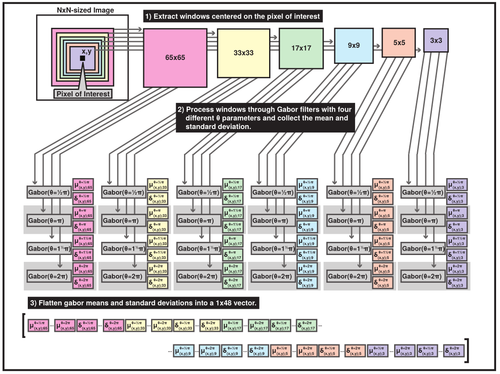
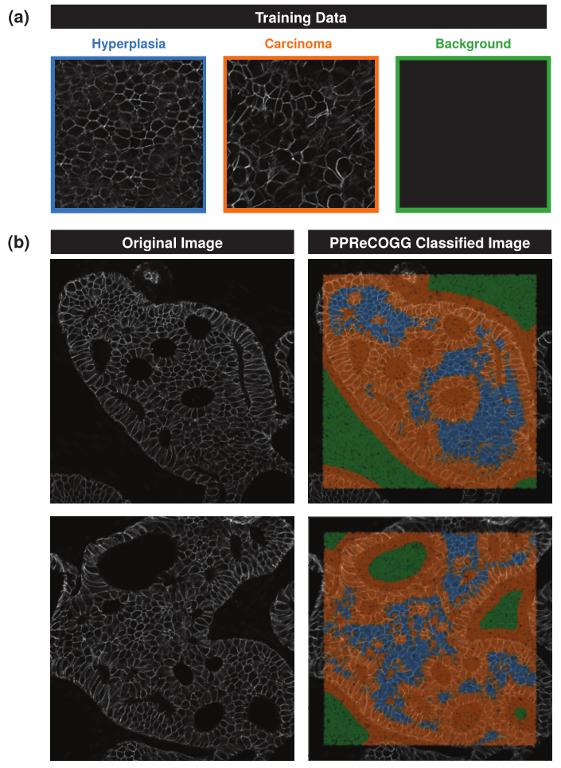

How PPReCOGG Works¶
Note
For more details, you can check out my Master’s Thesis for which this was written.
Extracting Texture Features from Pixel of Biopsy Images¶
PPReCOGG extracts texture features from any image, but is specifically made for extracting texture features from immunoflourescently labelled mammary tumour biopsy sections. Cell patterning unique to certain stages of cancers can be recognised this way, and help clinicians make decisions about breast cancer diagnoses.
PPReCOGG starts by selecting a random sampling of pixels, and centering windows of multiple sizes over them, convolving the window by Gabor kernels of multiple orientations, and calculating the mean and std.dev of the pixel values of the convolved windows.
Classifying Pixels¶
Using the k-Nearest-Neighbor algorithm, it’s possible to classify features from unknown pixels according to features of pixels whose classes are known.
This results in maps like these:
